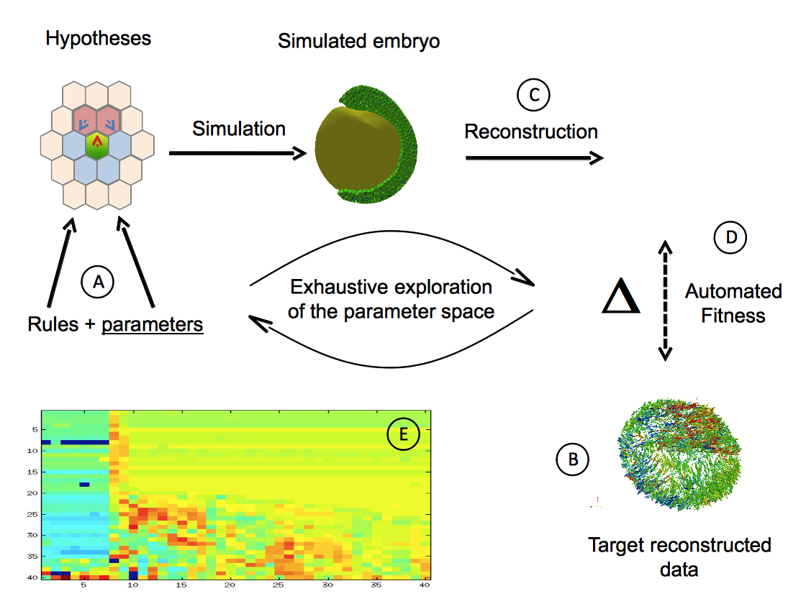
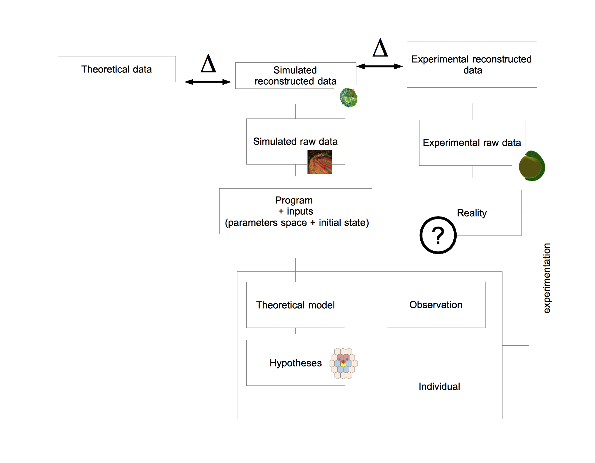

A general definition would state that development is a dynamical process which leads a given organism to a given morphological state and that the study of development is the study of the mechanisms which rule the coordination of cellular differentiation through space and time in multi-cellular organism.
This process is not steady, organisms may alternate period of transformation with quiet period dedicated to growth. However, the most dramatic transformations occur at the beginning, when the egg divides itself into myriad of cells which soon starts to perform a ballet of movement through elaborated interactions. It is interesting to note that this process never ends, the morphological state of an organism changing until senescence.
The definition of development has its own embryology: it changed with the numerous discoveries which punctuated the history of this field of research, and the practical methods used.
Denomination:
from Hopwood
pre 1880: classical descriptive biology
1880-1930: classical experimental biology
1960: developmental biology
introducing development from evolution, inheritance, transmitted information, transformation of this information->development ???
1.1.2. First Theories: Epigenesis, Preformation and Spontaneous Generation
Aristotle Envisioned Them All
If Hippocrates is often labeled as the first embryologist, in his Hippocratic Collection, he describes the successive stages of incubation of hens'eggs ,
Aristotle's "De Generatione Animalium" initiated the main theory of the formation of living organism, which still hold today. This theory, called "epigenesis", states that organisms develop through changes of shape. New parts appear and deform themselves by a serie of stages.
In book II of "De Generatione Animalium", Aristotle foresaw the alternative theory which resisted until the 18th century: "preformation". It states that no new structure are generated during development, but parts simply unfold and grow. His words was: "Either all the parts, as heart, lung, liver, eye, and all the rest, come into being together or in succession, as is said in the verse ascribed to Orpheus, for there he says that an animal comes into being in the same way as the knitting of a net." .
the preformationists' parenthesis
preformation The organisms develop from miniature versions of themselves. Simple growth of the part without differentiation.
A third hypothesis was developed by Aristotle in the "Historia animalium" . Synthesizing contemporary thought, he introduces the theory of "spontaneous generation". This theory proposes that some complex organisms, like insects, are generated from non-living matter, like putrefying earth, vegetable matter or dead flesh.
Early Mechanical Interpretation
In 1651, William Harvey was among the firsts to consider embryonic development as a dynamic process requiring causal explanations of the sequences of events .
In 1664, Descartes' "De la formation du foetus" is posthumously published and it contains the first attempt to explain the formation of an animal embryo by the means of mechanistic interactions. The male and female seeds would heat up and ferment until some of their particles would start to move and form the organs, from the heart which would push the blood directly towards the place it is freest to go and participating at the formation of the brain .
The End of Spontaneous Generation
In 1668, Gregorio Redi realizes an experiment which discredits the spontaneous generation hypotheses by showing that no fly can form in a closed jar containing food or already dead flies. As maggots would appear when the same experiment was run in open jar, he concludes that the food or the dead flies could not produce maggots by themselves . The final blow to this theory was struck by Louis Pasteur two centuries later (1859) when, as a young chemist, he shown that a boiled meat broth would not produce new organisms. The game changer (XXXXXX) of his experimental setup was that he bent the neck of the container to give it a S shape. It allowed air to pass through it but not the aerial microorganism because of the gravity grounding them. When the broth was put in touch with inflexion point of the neck, a culture would rapidly start to grow.
The End of Preformationism
Drawing of the homonculi observed in sperm by Nicolaas Hartsoecker (1695)
The contention between preformists and the upholders of epigenesis lasted for a longer time.
Antonie van Leeuwenhoek was a Dutch scientist who created various microscopes. In 1676, he made the first observation of single-celled organisms, "animalcules", soon after Robert Hooke has first described and termed the "cells" . Leeuwenhoek was discovered that the sperm cells of animals, among which humans, was entering the egg cell . In addition to his contribution to the refutation of spontaneous generation, this discovery favored the spermist side of the preformation camp. Some of them started to describe miniatured humanoid shapes as did Nicolaas Hartsoeker in 1695 ().
Caspar Wolff
Germ Layers
manque Caspar Wolff, Karl Ernst Van Baer,
In the 1820s, Christian Pander explains from the reinvestigation of developing chicks in egg that development does not start from the formation of organs but originates from the transformation of primitive sheets of tissue, the "germ layers" .
Cell Theory
Between the 1820s and the 1850s, the cells were added as the second pillar of embryological analysis mostly under the influence of Johannes Müller .
"The cell theory of the late 1830s arose from the attempt to generalize the development of these fundamental organs to later structures, and to unify development across the living world. " (XXXX réecrire from Hopwood ajouter info sur cell theory: "every living creature is made of cells. Cell as the building block of the living")
-> cleavage
"From the 1840s, Robert Remak argued that all cells arise from preexisting cells, from the egg, through the germ layers, to the tissues." (Hopwood) . This insight is now called the segmentation or cleavage stage and it is indeed the first morphological event of today's developmental study.
-> germ-layer specificity
Remak also introduces the concept of germ-layer specificity in vertebrates, stating that each layer - endoderm, mesoderm, and ectoderm - is specifying the cell type of all cells originating from it (muscles, skin, nervous system, intestine...) .
->lineage, specification, presumptive fate map
was it
This concept is central to embryology as it preludes the fundamental questions that will occupy embryologists until then.
mendel law
-> look for cleavage
-> lignage,
-> body plan / rupture de symmetrie
-> bod
schema
Egg segmentation from a dog's oviduct, surrounded by the zona pellucida and spermatozoa as represented by Albert Kölliker in 1861 .
1.1.3. The Rise of Experimental Embryology
From the 1880s, some embryologists reinvented their methods through experimentation to decipher the causal links between the successive stages of development. Denominating this discipline Entwicklungsmechanik (“developmental mechanics”), Wilhem Roux and others applied on embryos various kind of perturbations, either mechanical, thermal, chemical or electrical .
Entwicklungsmechanik: Self-Differentiation vs. Dependent Differentiation
The key question that Roux was raising was whether the differentiation process of the parts of an embryo is autonomous from external influence ("Self-differentiation") or not ("dependent differentiation"). In 1888, Roux obtained half-embryos after he destroyed one of the cell of a two-cell frog embryo with a hot needle. The half-embryos was presenting either anterior or lateral halves. Roux concluded that each blastoderm is capable of self-differentiation, independently from the missing half .
A year before, in 1887, Laurent Chabry was the first to characterize the autonomous differentiation of cell fate. By killing two identified blastomeres at the 8-cell stage of the ascidian tunicate, the ascidian became tadpode which were missing tail muscles. When he extracted and cultured the same two blastomeres at the same stage, they resulted in isolated tail muscle .
In 1891, following Roux's influence, Hans Driesch repeated the experiment on a two-cell stage sea urchin embryo. He separated both blastomeres and observed that each one had differentiated into a half-sized, yet complete, sea urchin larva.
In 1893, by pressing on a sea urchin embryo at the third cell cycle, Driesch completely modified the relative position of the cells and still obtained normal larvae. A mosaic determination process would have produced highly perturbed embryo so it proved that the determination occurs later than expected.
Driesch obtained normal larvae from these embryos. He concluded, "The relative position of a blastomere within the whole will probably in a general way determine what shall come from it."
These experiments epitomize the antagonist interpretation of an autonomous differentiation which requires some "determinants" to be present at the earliest stage and to be separated by the cell division and thus spatially specify the cell fate (mosaic development), as opposed to a development which depends on the interaction between the cells.
citer classification de Davidson in Davidson, E.H., 1991. Spatial mechanisms of gene regulation in metazoan embryos. Development, 113(1), pp.1–26.
Neither totally mosaic or totally regulative, development's secret lies in the balance between both principles. Sometimes, the cell seems to be highly dependent from their surroundings and sometimes they just batten down the hatches and dive into their differentiated fate. From this point, most of the embryological studies will be consecrated to deciphering the modus operandi of these principles from their macroscopic characterization at the tissue level to the molecular mechanisms at the sub-cellular level.
Morphogenetic Fields
Lawrence, P.A. amp;evine, M., 2006. Mosaic and regulative development: two faces of one coin. Current Biology, 16(7), pp.R236–R239.
Autonomous vs Conditional specification/specialisation/determination/differentiation (yields concept of induction, determination, competence, potentialities, regulation, diffusion, morphogenetic fields, gradients...): maybe the most fundamental concept of development, developmental concept in its own right (not borrowed to another discipline). at the tissue level and at the cellular level.
The early 20th embryologists refined these question with new experiments as grafts.
Fields
Here we must define the notion of competent tissue and induction XXXX -> gradients, fields, competence, induction, differentiation, commitment, specification, determination, specialization, canalization, regionalization, potential
In 1918, Ross Harrison publish a paper which introduced the concepts of morphogenetic fields . He experimented various limb grafts on newt embryo. He grafted some cells from a specific region of the mesoderm to the non-neural ectoderm and observed that an additional forelimb was formed. The original grafted cell population has the ability, even after transplantation, to "remember" its fate. Even if the cells were separated in two subpopulation and grafted independently, both grafts would grow intact limb . The key property of a morphogenetic field is to conserve its potential even after important manipulation.
Later observations shown that the fate of the morphogenetic field was depending on the position along the antero-posterior axis. It lead to the notion of gradient-field which determines the identity of the fields .
"Harrison defined the mesodermal cells of the limb rudiment as what would be called a “field” a physically bounded area of interaction within which state of determination is a function of position."
Induction
In 1924, Hans Spemann and his PhD student Hilde Mangold reported the discovery a tissue in the Newt gastrula which, when grafted on the ectodermal region of another Newt embryo, triggers a neurulating process and initiates the formation of a secondary embryonic axis (Spemann, H. amp;angold, H., 1924. über Induktion von Embryonalanlagen durch Implantation artfremder Organisatoren. Wilhelm Roux' Archiv fur Entwicklungsmechanik der Organismen, 100(3-4), pp.599–638. ). This tissue was denominated the organizer as it was able to instruct and organize the adjacent ectoderm. Spemann proposed two different speculative mechanisms: either the existence of a chemical substance that would be transmitted to the induced tissue or the inducing tissue would possess a specific vitalistic "structure" associated to the living embryo . These hypotheses became the focus of intensive study around the world.
Boiling, dessicating and other tissue killing experiment exercised on the Spemann organizer rapidly dismissed the second hypotheses. The organizer was not any more actively organizing the formation of the induced organs but simply releasing a water-diffusible chemical agent which would initiated the self-organization of the induced tissue. A global quest on the identity(ies) of the inducing substances started around the world.
see Armon, R., 2010. Between Biochemists and Embryologists – The Biochemical Study of Embryonic Induction in the 1930s. Journal of the History of Biology, 45(1), pp.65–108.
experiments:
dead or desintegrated organizer tissue still induces neural plates (Johannes Holtfreter, 1932) see Gerhart, J., 1998. Johannes Holtfreter: January 9, 1901-November 13, 1992,)
1961 Lauri Saxon showned that the inducing substance could act through "millipore" filter with an average pore size of 0.8 micron and a thickness of 20 microns, confirming that the substance was indeed diffusive.
...
candidate substances (from Steinbeisser, H., 1996. The impact of Spemann's concepts on molecular embryology ):
lipids in Needham, J.G., Waddington, C.H. & Needham, D.M., 1934. Physico-chemical Experiments on the Amphibian Organizer
oleic and nucleic acids Wehmeier, E., 1934. Versuche zur Analyse der Induktionsmittel bei der Medullarplatteninduktion von Urodelen
proteins: Barth, L.G. & Graff, S., 1938. The chemical nature of the amphibian organizer. Cold Spring Harbor Symposia on Quantitative Biology
activin, mesoderm inducing protein form chicken : Tiedemann, H. et al., 1992. The vegetalizing factor. A member of the evolutionarily highly conserved activin family. FEBS letters
follistatin (because the induction is not tissue-specific, a substance contains in several tissues was targeted): ...
Decades later, the variety of candidate substances positively inducing neurulation progressively discouraged the embryologists to elucidate the quest of finding tissue-inducing agent and the more promising field of modern molecular biology attracted the younger ones away from this quest . However, the concept of induction was only suffering a temporary slowing down, before witnessing a rebirth and eventually being grounded in physico-chemical terms.
section inspired by Gilbert, S.F., 1991. Induction and the Origins of Developmental Genetics.
2 questions :
.The question of the inputs: from what the shape is formed ?
.The question of how the shape evolve
Explain that it was hard to dissociate the developmental question from the question of evolution of species
until Morgan...
In the early 20th century, embryology and genetics were both part of the larger field of heredity and were tightly entangled. A split was initiated by the work of Thomas Morgan who proposed that, to avoid confusion, embryology would study the expression of the hereditary traits whereas genetics would deal only with the transmission of those traits (see chapter II of "The Theory of the Gene" ). From this time, some biologists tried to reunite both fields, leading the emerging field of developmental genetics.
The first publication which founded this field is the work of Gluecksohn-Schoenheimer which interpreted the defect in the induction of the mouse notochord as the consequence of a mutation of the Brachy gene (, ). The result not only pioneered developmental genetics but it also proposed a new methodology for the study of embryology. Instead of perturbing the development of embryo and observe the consequences of the phenotype, mutant phenotype were to be observed first and cause had to be decipher from it.
This methodological dichotomy would be resolved decades later with the experimental generation of mutants selected by the observation of their phenotypes. (like chemically induced random mutation in Drosophila by Nüsslein-Volhard and Wieschaus in 1980 or in Zebrafish a few years later )
Ajouter vision Waddington depuis livre
1.1.5. Molecular Genetics
1961
notion of induction at the subcellular level: gene that are activated by TF and locked by inhibitors or epigenetic methylation...
Operon-Lactose
the discovery of the operon lactose initiating the genetic trend of embryology / mechanism of induction and repression of the genes by the inactivation or the inactivation of the "repressor". regulator and operator (regulatory sequence see Davidson for its position on this ?) (JACOB, F. amp;ONOD, J., 1961. Genetic regulatory mechanisms in the synthesis of proteins. Journal of molecular biology, 3, pp.318–356. ) : already envisioned the influence of this discovery on induction, as the controlling mechanism of induction -> "The occurrence of inductive and repressive effects in tissues of higher organisms has been observed in many instances (...). It has repeatedly been pointed out that enzymatic adaptation, as studied in micro-organisms, offers a valuable model for the interpretation of biochemical co-ordination within tissues and between organs in higher organisms. The demonstration that adaptive effects in micro-organisms are primarily negative (repressive), that they are controlled by functionally specialized genes and operate at the genetic level, would seem greatly to widen the possibilities of interpretation. The fundamental problem of chemical physiology and embryology is to understand why tissue cells do not all express, all the time, all the potentialities inherent in their genome." (fin de l'article)
Immediately understood by some embryologists as Waddington who had defended the notion of a cytoplasmic activated, genetic control of the cell fate in development (chapter "The Activation of Genes by the Cytoplasm" in Waddington, C.H., 1956. PRINCIPLES OF EMBRYOLOGY, The Macmillan Company.) (from in A Conceptual... S Gilbert: induction and the origins of developmental genetics)
finally reconcile the orchestration of spatio-temporal cell specification with biophysical molecular paradigm
1. GRN
2. signaling pathways
ou inversement
Gene Regulatory Networks (GRNs), Cis-Regulatory Systems
description of the mechanism
see Arnone, M.I. amp;avidson, E.H., 1997. The hardwiring of development: organization and function of genomic regulatory systems. Development, 124(10), pp.1851–1864. :
genes expression is regulated by multiple "transcription factors" (TF) which target a specific region of the DNA.
This region is called "cis-regulatory" because the portion of DNA on which bind the TFs is usually on the same DNA molecule as the genes they regulate ().
activation/ inhibition
control rate of transcription (? really, how is it not only 0 or 1, dynamical regulation with TF level controling the expression to maintain it at a certain level. If the expression of the gene is too low, the GRN activates its cis-regulatory system and inhibite if the expression is too high).
--> not really :
"For one thing, it is relatively easy to measure transcriptional output directly and thus short-circuit this issue; or as done by Bolouri and Davidson (2003) a more or less mechanism-independent assumption can be made that transcriptional activity is proportional to driver site occupancy until it approaches the saturating absolute value of the maximum transcription rate characteristic of the system." (Davidson, E.H., 2006. The Regulatory Genome, Academic Press. )
"The rates or intensities of expression of differentiation genes are also subject to posttranscriptional modulation, as well as to modulation at the transcriptional level. This last can occur by target site divergence in cis-regulatory modules regulating individual structural genes, or in the modules regulating the battery controllers." (Davidson, E.H., 2006. The Regulatory Genome, Academic Press. )
"hardwired" network of interactions between through transcription factors.
Maternal Factors
first direct evidence of a maternal RNA present in the oocytes which control the early activation of the GRN in the mouse. (Renard, J.P. et al., 1994. A maternal factor affecting mouse blastocyst formation. Development, 120(4), pp.797–802. )
Pelegri, F., 2003. Maternal factors in zebrafish development. Developmental dynamics : an official publication of the American Association of Anatomists, 228(3), pp.535–554.
Maternal RNA anisotropy in the oocyte: differentiated initialization of the network
ex: Drosophila embryo with bicoid gradient from the anterior end.
"many additional asymmetries along this axis are established during oogenesis (Gavis and Lehman, 1992; St. Johnston and Nüsslein-Volhard, 1992; Roth and Schüpbach, 1994)." (from regulatory genome)
see Gavis, E.R. amp;ehmann, R., 1992. Localization of nanos RNA controls embryonic polarity. Cell, 71(2), pp.301–313.
see St Johnston, D. amp;üsslein-Volhard, C., 1992. The origin of pattern and polarity in the Drosophila embryo. Cell, 68(2), pp.201–219.
ex: C. Elegans -> A/P axis : Skn1 and Pal1 maternal TFs at the posterior end
External signal which generates anisotropy:
ex: C. Elegans D/V axis : cytoskeletal reorganization
...etc see chapter 3 regulatory genome
first grn were anecdotal, then in 2002, a large scale network (more than 40 genes) was published by Davidson et al. and its activity was correlated with the specification of the endomesoderm of the sea urchin embryo. (Davidson, E.H. et al., 2002. A provisional regulatory gene network for specification of endomesoderm in the sea urchin embryo. Developmental Biology, 246(1), pp.162–190. , Davidson, E.H. et al., 2002. A genomic regulatory network for development. Science, 295(5560), pp.1669–1678. )
Cytoplasmic Protein-Protein Interactions: The Missing Pieces
Imaging and quantification of the gene expression level in vivo : Dmochowski, I.J. et al., 2002. Quantitative imaging of cis-regulatory reporters in living embryos. Proceedings of the National Academy of Sciences of the United States of America, 99(20), pp.12895–12900.
Gene Regulatory Networks and Epigenetics
"the hidden controllers"
DNA and histone methylation participates in the control of the developmental genes (Lindeman, L.C. et al., 2010. Chromatin states of developmentally-regulated genes revealed by DNA and histone methylation patterns in zebrafish embryos. The International journal of developmental biology, 54(5), pp.803–813. , Lindeman, L.C. et al., 2011. Prepatterning of Developmental Gene Expression by Modified Histones before Zygotic Genome Activation. Developmental cell, pp.1–12. ).
control of the transcriptional activity by perturbation of the nuclear envelope through mechanical forces exerted by microtubule polymerization (Hampoelz, B., Azou-Gros, Y. amp;abre, R., 2011. Microtubule-induced nuclear envelope fluctuations control chromatin dynamics in Drosophila embryos. )
small RNA also participate in the regulation during developpement: differentiation signals modulate RNAi silencing to regulate developmental genes (in Yamanaka, S. et al., 2012. RNAi triggered by specialized machinery silences developmental genes and retrotransposons. pp.1–5.)
Signaling Pathways, Transduction
ou l'on decouvre comment la cellule interprete le signal exterieur
connecting GRNs together
review:
Pires-daSilva, A. amp;ommer, R.J., 2003. The evolution of signalling pathways in animal development. Nature Reviews Genetics, 4(1), pp.39–49.
"Various cell types in animal but only a few signaling pathways" ->
Wnt signalling
see Klaus, A. amp;irchmeier, W., 2008. Wnt signalling and its impact on development and cancer. Nature reviews. Cancer, 8(5), pp.387–398. :
"These signalling systems operate beyond cell and tissue boundaries, but function as morphogens that are secreted from one cell or tissue type to activate surface receptors, signal transduction components and transcription factors in neighbouring cells or tissues, regulating processes such as cell proliferation, survival or differentiation."
The Wnt gene has been discovered multiple times in different animals. Its name itself is the contraction of the two occurrences Int1 which was characterized in 1982 by Nusse and Varmus as a gene inducing mammary gland tumours in mice (Nusse, R. amp;armus, H.E., 1982. Many tumors induced by the mouse mammary tumor virus contain a provirus integrated in the same region of the host genome. Cell, 31(1), pp.99–109. ) and its homologue Wingless (Wg), described in 1973 as a gene provoking Drosophila wings'lacking mutants . The Wg mutation was later associated with default in the Drosophila segmentation process (Nüsslein-Volhard, C. amp;ieschaus, E., 1980. Mutations affecting segment number and polarity in Drosophila. Nature, 287(5785), pp.795–801. ).
Notch
see Artavanis-Tsakonas, S., Rand, M.D. amp;ake, R.J., 1999. Notch signaling: cell fate control and signal integration in development. Science, 284(5415), pp.770–776.
see Bray, S.J., 2006. Notch signalling: a simple pathway becomes complex. Nature reviews Molecular cell biology, 7(9), pp.678–689.
ex: dorsoventral patterning in the Drosophila gut formation by controlling cell fate specification ( Fuss, B. amp;och, M., 2002. Notch signaling controls cell fate specification along the dorsoventral axis of the Drosophila gut. Current biology : CB, 12(3), pp.171–179. )
Hedgehog
see Wicking, C., Smyth, I. amp;ale, A., 1999. The hedgehog signalling pathway in tumorigenesis and development. Oncogene, 18(55), pp.7844–7851.
Jiang, J. amp;ui, C.-C., 2008. Hedgehog signaling in development and cancer. Developmental cell, 15(6), pp.801–812.
TGFβ-BMP
see Wu, M.Y. amp;ill, C.S., 2009. Tgf-beta superfamily signaling in embryonic development and homeostasis. Developmental cell, 16(3), pp.329–343.
Mechanotransduction
mechanical action on the cell as a regulatory input (either through genetic regulation or cytoplasmic regulation)
a review : Eyckmans, J. et al., 2011. A Hitchhiker's Guide to Mechanobiology. Developmental cell see
First theory involving mechanical forces:
Wolff, J. Das Gesetz der Transformation der Knochen. (Hirschwald: 1892): the mechanical environment impacts the structure of bone tissue after healing of fractures.
Roux, W. Gesammelte Abhandlungen über Entwicklungsmechanik der Organismen. (1895) and Thompson, D. A. W. On Growth and Form. (Cambridge University Press: 1917): mechanical forces shape tissues and organs during embryonic development
More recently externally applied forces have impact on cellular proliferation (in bone , vascular system), cell signaling (endothelial and smooth muscle ).
me: looking like first in vitro experiments started in early 1980s: force pressure exerted on cells modify cell function. Particularly, study on blood-flow-dependent shear stress on cells in angiogenesis, vascular remodeling, atherosclerosis.
see in Davies, P.F. et al., 1984. Influence of hemodynamic forces on vascular endothelial function. In vitro studies of shear stress and pinocytosis in bovine aortic cells. The Journal of clinical investigation, 73(4), pp.1121–1129.
me: does not seem to emphasize the mechanotransduction but rather the specific discovery. Need to find a more "important" paper...
me: another one Franke, R.P. et al., 1984. Induction of human vascular endothelial stress fibres by fluid shear stress. Nature, 307(5952), pp.648–649. see
molecular transduction units: "many anatomical sites could be involved in transducing such forces into biochemical signals (Eyckmans)"
site 1: force-induced nuclear deformations can directly alter genomic structure and accessibility of transcription factors to specific genetic targets, but no direct demonstration of such a mechanism has yet been described (Eyk)
me: mechanotransdution catogory 1: as a source of cytoplasmic reaction (not involving genetic regulation but may need a certain state given by genetic regulation)
site 2: adherent junctions
Nelson, C.M. et al., 2005. Emergent patterns of growth controlled by multicellular form and mechanics. Proceedings of the National Academy of Sciences of the United States of America study of the impact of tension and adhesion on the spatial pattern of proliferation in in vitro multicellular system (experiment + modeling). Endothelial cells. Results the higher the mechanical stress, the more the cells proliferate. Chemically inhibiting cytoskeletal tension-responsible molecules (rho kinase, myosin II ATPase with blebbistatin) induces a reduction of proliferation rate.
More recently, in 3D epithelial tissues (branching pattern) in Gjorevski, N. and Nelson, C.M., 2010. Endogenous patterns of mechanical stress are required for branching morphogenesis. Integrative Biology: "branching only occurred at locations where the biochemical and mechanical cues were predicted to reinforce each other" and "We found also that the magnitude of mechanical stress at branching sites correlated with the extent of branching: decreasing the magnitude of stress by decreasing cellular contractility or matrix stiffness resulted in decreased branching, whereas increasing the magnitude of stress resulted in increased branching."
both previous papers evoke "mechanical gradients"
in vivo context, drosophila mesoderm invagination in Martin, A.C. et al., 2010. Integration of contractile forces during tissue invagination. The Journal of cell biology: feedback between actomyosin meshwork pulsing contraction and intracellular adhesion through adherent junctions. No influence on the GRN regulation (twist and snail are required but nothing shows that they are up-regulated by mechanotransduced signals)
Drosophila again, Fernandez-Gonzalez, R. et al., 2009. Myosin II dynamics are regulated by tension in intercalating cells. Developmental cell: "myosin II is stabilized at the cortex in regions of increased tension. Myosin II is recruited in response to an ectopic force and relieving tension leads to a rapid loss of myosin, indicating that tension is necessary and sufficient for cortical myosin localization."
site 3: hemidesmosme
in Zhang, H. et al., 2011. A tension-induced mechanotransduction pathway promotes epithelial morphogenesis. Nature (C Elegans): "By compressing muscle-defective mutant embryos between a blunted microneedle tip and a programmable microscope stage, the authors were able to rescue GIT1 signaling and CeHD maturation, thus providing a link between muscle-generated tension and longitudinal growth in C. elegans." (Eyk)
me: the real deal, mechanotransduction category 2: developmental genes activation induced by external force:
in Desprat, N. et al., 2008. Tissue deformation modulates twist expression to determine anterior midgut differentiation in Drosophila embryos. Developmental cell, show how compression forces between two cell types during Drosophila germ band elongation can induce the expression of Twist, a transcription factor that regulates the differentiation of the anterior midgut. (Eyk) magnetic microtweezers were used to push the magnetized patch against the stomodeal cells with a force of 60 ± 20 nN. These mechanical manipulations rescued Armadillo/beta catenin translocation from the cell junctions to the nucleus which restored transcription of Twist (Eyk)
me: the real deal 2, mechanotransduction category 3: internal polarizaton of the cell induced by external force:
in Weber, G.F., Bjerke, M.A. & Desimone, D.W., 2011. A Mechanoresponsive Cadherin-Keratin Complex Directs Polarized Protrusive Behavior and Collective Cell Migration. Developmental cell (Xenopus): local pulling on C-cadherins induces polarization of the internal structure of the cell (keratin intermediate filament toward stressed sites, plakoglobin at the cadherin adhesion sites. Cell protrudes and migrates/intercalates at the other end of the cell. It explains how in multicellular protruding ensemble, intercalation axes align, and (maybe) how a migration signal can be propagated (if these cells are in a certain state) ). Still need to elucidate how to drive this powerful property.
other paper:
Dupont, S. et al., 2011. Role of YAP/TAZ in mechanotransduction. Nature, 474(7350), pp.179–183.
other reviews Orr, A.W. et al., 2006. Mechanisms of mechanotransduction. Developmental cell, Jaalouk, D.E. & Lammerding, J., 2009. Mechanotransduction gone awry. Nature reviews Molecular cell biology, Wozniak, M.A. & Chen, C.S., 2009. Mechanotransduction in development: a growing role for contractility. Nature reviews Molecular cell biology
1.1.6. Cell Biomechanics
start with with review: Keller, R., 2012. Physical Biology Returns to Morphogenesis. Science, 338(6104), pp.201–203. :
In addition to the genetic and molecular aspects, a characteristic feature of the study of development is the study of the biomechanical properties and functions of the cells. As reviewed by Ray Keller , this field has stayed quiet for a long time during the 20th century but has become more and more vigorous recently. Keller discriminates two tendencies which structure the physical shaping of embryos and which were both envisioned by Johannes Holtfreter: the notion of "selective affinity" modulated by adhesion and the notion of the physical integration of multiple local cellular behavior.
Differential Adhesion Hypothesis and Improvements
Holtfreter used his experimental skills to separate cells from their different germ layers and mix them. He observed that they were able to recognize their lineage origins and they would adopt different preferential association or "affinities" according to it . He postulated that this mechanism could lead to the progressive organization of the embryo. From 1962, Malcom Steinberg refined this idea and developed the Differential Adhesion Hypothesis (DAH). Relating the behavior of cell during development to the properties of liquids, the DAH states that in heterogeneous population, cells are both cohesive and mutually motile and the interfacial surface tension will lead the ensemble towards the most stable configuration. The main factors defining the interfacial surface tension was originally the mutual adhesivity between cells, cells having a higher affinity meaning a stronger adhesive bonds. This theory had a great influence because of the simple causal link it introduced between gene expression and physical shaping rule through adhesion-molecule. Later refinements added the cell rigidity as a key factor to the interfacial surface tension definition. Through cortical tension, the principle become that stronger adhesion is increasing the contact size whereas stronger cortical tension decreases it .
Cell Behaviorism
The second notion envisioned by Holtfreter was that cell mechanical behavior was truly diversified and that the collective integration of the local behaviors was to be deciphered. He observed the specialization of the external layer of the frog gastrulae, its organization as planar sheet whom particular cell shape changing must express particular cell mechanical behaviors. He also observed the protrusive activities of some cells in culture, the way they exert forces of the substrate and orient their migration. Trinkaus determined the migrating behavior of cells in the avian neural crest, echinoderm mesenchyme and the teleost fish epiboly .
XXX ajouter historique des epitheliums... invaginations XXXX.
recent review: membrane mechanism during the formation of the apical-basolateral axis of polarity in epithelium see
Migration
Individual vs collective
active or passive: may produce the same behavior in term of displacement
Individual migration ->_extensively studied in vitro
example: progenitor stem cells
collective migration when a group of cell remains connected during their movement.
less studied
2 archetypical scenario:
a. border cells of the group are active and exert forces with the surrounding tissues.
b. inner cells of the group are active and
en vrac
Weijer, C.J., 2009. Collective cell migration in development. Journal of Cell Science, 122(Pt 18), pp.3215–3223.
Ilina, O. amp;riedl, P., 2009. Mechanisms of collective cell migration at a glance. Journal of Cell Science, 122(Pt 18), pp.3203–3208.
Rørth, P., 2009. Collective Cell Migration. Annual review of cell and developmental biology, 25(1), pp.407–429.
Vedula, S.R.K. et al., 2012. Emerging modes of collective cell migration induced by geometrical constraints. Proceedings of the National Academy of Sciences, 109(32), pp.12974–12979.
Discussion descriptive vs experimental
passage de descriptif a experimental très important.
description -> too speculative ??
experimental -> more serious ??
from hopwood:
"By the 1880s, academic embryology was in turmoil. The inability of teachers
to agree, especially on the relative weighting of embryological and comparative
anatomical evidence, turned influential students away from evolutionary
morphology. They abandoned problems such as the origin of the vertebrates
to focus on narrower questions, which they expected to answer using a more
limited selection of materials, and many modeled their science on experimental
physiology. Indeed, by opposing “experimental” to “descriptive” embryology,
the more militant secured an identity as experimental biologists in a
science they saw as overly descriptive and rife with unsupported speculation.
In the 1970s and 1980s, historians of biology reinvestigated the changes in
embryology between 1880 andWorldWar I as exemplifying that wider transformation
in the organization, problems, institutions, and methods of the life
sciences by which biology as we know it was made. Experimental embryology
and genetics were taken as model subdisciplines. Initial efforts to generalize
tended to reinforce a one-dimensional view of a “revolt from morphology,”
but later studies worked to produce a more nuanced and inclusive history.31
Yet the very agenda of searching for the origins of the new biology has underestimated
continuities and excluded significant innovations in human and
comparative embryological research."
->pas bien compris
descriptive bio unique tool to test evo hypotheses: for example comparing different species to investigate the relations of phylogeny and ontogeny. ??
experiment for development only questions??
"Experiment, we can conclude, worked in two ways: as a practice and as a
rhetoric, even an ideology.41 As a practice, experiment became the method
of highest status. As a rhetoric, experimentalism associated its practitioners
with modern rigor and control and simultaneously created “descriptive
embryology” as its unglamorous other, ideally relegated to a “classical” past.
Experiment did not in fact replace analysis but was added to it. Experimentalists
sought to reveal the potentialities of parts and analyzed operated embryos
for the presence or absence of tissues, cells, or molecules; they also invested
time in making standards, “normal stages” adapted from Keibel’s plates and
“fate maps,” against which to assess the effects of their interventions.
Nor did “descriptive embryology” just fade slowly into the background; in the
years before World War I, when most histories have experimenters making
all the running, “descriptive” embryologists founded both the first specifically
embryological society and the first research institution dedicated to the
science. And though the war seriously disrupted the European initiatives,
comparative work continued."
1.2. Issues and Objectives
Mettre en avant la nécessité d'un nouveau cadre théorique pour répondre aux questions actuelles.
Argument Ray Keller -> Keller, R., 2012. Physical Biology Returns to Morphogenesis. Science, 338(6104), pp.201–203.
Despite these advances, the question of
how local cell behavior and forces are physiologically
and mechanically integrated over
hundreds or even thousands of cells remains
a challenge, to be met with new technologies
and biophysical approaches to explore possible
answers. ...
... Most important, applying the principles
of engineering and soft-matter physics to
cell and tissue morphogenesis allows the construction
and testing of hypotheses that are
meaningful at embryonic length scales, rather
than the often deceiving extrapolation from
mechanics on the length scale of our experience
( 15). Recent approaches combining,
for example, computational modeling, biomechanical
measurement, and experimental
manipulation have advanced our understanding
of how local cell behavior and mechanical
interaction of tissues drives morphogenesis
( 16– 18). Physical biology has indeed returned
to a central and essential role in analysis of
integrated cell movements.
argument:
enormément de parametres, tout est interdépendant:
-soit on feint de l'ignorer et on étudie les éléments séparement (mais on fait l'autruche) et on valide des hypotheses self-consistent (mais fausse) -> ce qu'on fait aujourd'hui
-soit on fait des modeles integratifs, on fera des erreurs, plus difficile mais il faut commencer à attaquer la complexité, cette approche est complémentaire et permet d'être moins naif, de voir les limites de l'approche précédente
1.3. Methodology
commentaires René:
http://public.iscpif.fr/~delile/morphogenesis/manuscript/comments/1.3.Methodology_COMMENTS.pdf
problematique : proposer un nouveau cadre theorique
ce cadre est integratif, il ne propose pas de nouveau principe theorique
mais il est integré dans la reconstruction pour permettre diagramme de phase (approche physicienne)
read Varner, V.D. amp;aber, L.A., 2012. On integrating experimental and theoretical models to determine physical mechanisms of morphogenesis. Biosystems, 109(3), pp.412–419.
(XXXX à supprimer) Goal of this section : describe our methodology as an augmentation of the classical experimental methodology by the means of tools.
This section aims at describing the methodology that funds this project. We defend the notion that the complex nature of the developmental processes in vertebrate require the use of augmented strategies, build upon the classical experimental sciences framework. This is not a dissertation in epistemology, but we felt compelled to give a clear methodological framework to our modeling and simulation endeavors.
-> We will make short but important preliminary remarks about the generation of hypotheses and models by scientists, the tools that they designed to help them in this process, then discuss the notion of "validation" and quality of a model... This is not a dissertation in epistemology, but we felt it was crucial to give a clear methodological framework to our modeling and simulation endeavors...
The perpetual loop of experimental science
Experimental Science augmented with Computer Simulation. Simulated seashell extracted from Fowler, D.R., Meinhardt, H. & Prusinkiewicz, P., 1992. Modeling seashells. Proceedings of SIGGRAPH '92. Fowlery:1992wb
2 actors : individual and reality / environment
3 process: perception, generation of hypothesis (modeling), experimentation
1.3.1. Scientists "in the Loop"
The Individual
Experimental science involves an individual and its environment ("Reality"). This activity shares similarities with other of its explanation-seeking activities.
Experimental science is characterized by three fundamental processes: the perception of its environment, the generation of new hypotheses and the experimentation on the environment to test the hypotheses (see figure ).
1. The loop can be entered by the individual perceiving his environment.
2. The observations are then matched with the knowledge of the individual. Most of the time, if the observation conforms to the knowledge, no reactive signal is emitted. However, a significant difference between the observation and what he expects would trigger a signal of curiosity which will challenge the existing set of hypotheses of the individual and lead him to reconsider some of them. The process of how the individual create new hypotheses will not be discussed in this manuscript (analogy, inference, induction, abduction, deduction...). The satisfying hypotheses are the one which set a causal relationship between the observations. They identify some observations (the effects) as the consequences of others (the causes). Hypotheses have predictive value as they can extrapolate the behavior of the system when the causal factors are modified.
3. The "experimental" qualification of sciences like biology or physics is due to their ability to couple the "pure thinking" exercise of generating new hypotheses with interaction on the "real" system in order to test the validity of these new hypotheses.
The more efficient way to assess that the relation inferred by the individual are compatible with the observation is to identify some elements of the studied object as potential factors, then to perturb them to modify the behavior of the studied object and finally to compare the observed behavior with the predicted behavior.
The environment of the individual is made of multiple potential object of study.
The specification of the object of study induces a separation of the object from its own environment which may, or may not, include the individual. In developmental biology, the studied object is the embryo and the individual is excluded from the embryo's environment.
Exchange/Validation by the Scientific Community
Even if the individual is at the center of experimental science, experimental science is a collective effort. The interaction with the scientific community operates bidirectionally.
All the hypotheses the individual makes are build upon an accumulation of prior scientific works. He can access nearly all knowledge produced by the scientific community thanks to conferences or the various scientific papers databases (Pubmed, arXiv.org, IEEE, ACM, Google Scholar...).
One particularity of science is that validation of a scientific work is made by the approval of the community of scientists. Through the peer-reviewed publication system, each new work is filtered before availability by a panel of individual representing the community. We may distinguish two kind of validation: the validation of the scientific work containing all or some parts of the elements mentionned in figure , and the validation of the hypotheses contained in the scientific work itself. We will develop the latter in the following (XXXXXX see part III).
Experimental science is a collective effort. Each member of the scientific community may send or receive scientific work.
1.3.2. Tool-Augmented Methodologies
Experimental science insists on the confrontation of the hypotheses, their prediction and the observation.
This confrontation is improved by the means of tools.
Tools can be considered as the third actor in experimental science, in addition to the individual and the object of study.
recursive process
Tools are also object of study by themselves. In developmental biology, the tools used to observe or perturb are themselves the focus of intensive ongoing research, from other fields of science.
The advances of our understanding are controlled by the advances of theses tools. Always improving microscopy increases the spatio-temporal resolution of the observations and every new microscope triggers a boom of conceptualization of these observations.
The use of new physical tools drives methodological renewals. We will present an augmented version of the figure which introduces the methodology developed for this project. We distinguish the tools designed to augment the three fundamental processes of experimental science: tools to perceive, tools to conceive and tools to manipulate.
Tools to Perceive
Intro
Tools can improve the perception of the object of study, from the interfacing between the real system and the observed data, to the analysis of these data to extracts salient features compatible to their interpretation.
Pourquoi ces outils: étendre la nature de sens, augmenter la resolution, diminuer le grain
Improvements provided by the perception-oriented tools are dual, they allow to reach information unaccessible to the natural senses of the individual:
they widen the nature of sense of perception,
they increase the precision of the perceived information, allowing the discrimination of ever smaller grain.
Perception perturbe a minima le fonctionnement du système
Perception-oriented tools may perturb the natural behavior of the studied object by introducing in external elements to permit or facilitate the perception. For example, in the current study, the microscope images are obtained by either using artificially mutated version of the fishes or injecting fluorescent molecules and the laser lightning heats up the enlighten region. In those cases, a special care has to be taken to evaluate, control, and maintain a minima perturbation.
definir la mesure
Perception-oriented tools are objects whose aim is to produce measures of the object of study.
Measures are quantification of the physical quantities of the object of study with ordinary real numbers, the data and are scaled by unit of measurement.
The data is also the embodiment of the abstract notion of measure.
mesure dependant des connaissances, never interpretation-free -> dans notre cas l'arbre de lignage
Measures are never interpretation-free, the way they are constructed depends on a priori knowledge.
So their quantitative nature does not preclude subjectivity, they are indispensable elements that must be handle carefully, and their scaling units must be validated by consensual agreement.
distinguer les differents types de mesures
local microscopic measures
extensive microscopic measures
macroscopic measures, projection on a space of lower dimensionality, easier to interpret. (renvoyer à section scaling up 2.2.1.)
On entre dans le cas du developement: type de mesure (issu microscopie) + organisation des mesures (format vers lignage, organisation spatio-temporal fondé sur l'identité des cellules) - at the cellular scale
Augmentation of the perception by a reconstruction workflow.
Optical microscope devices as an interface with the studied object
In developmental biology, the principal perception-oriented tools are optical microscope devices. The ensemble of the measures used in this project are emanating from the these devices. Other tools used in developmental biology are force microscopes and the disruptive tools of molecular biology (DNA/RNA microarray, macromolecule blotting and probing...).
Optical microscopic devices allow to extend our perception below the cellular scale. The general principle is to send photons to excite small region of the embryos which themselves send other photons that are collected by camera sensors through objective lenses. The path of the exciting light beam is controlled to cross the region of interest in the embryo. A software automates the task and automatically associates the spatial coordinate of the exciting region to the quantity of photon captured by the sensor.
An extensive travel produces a volume of voxels (3-dimensional pixels) which stored the spatially localized quantity of photon emitted by the embryo.
This process is repeated multiples times and a times-series of 3D volume is generated.
This basic measure generated by the microscope is called the 4D (3D + time) raw data (or raw data for the sake of simplicity).
introduire microscopic measure puis dire qu'elle permette la comparaison mais pas l'interpretation
The local measure stored in a voxel is called its intensity. This measure belongs to a category we denote by local microscopic measures. Local microscopic measures are the measures at the with the smallest spatio-temporal grain. The aggregation of all these local measures composes the extensive local measures, field which contains the complete set of information captured by our perception-oriented device.
The raw data presents two challenges:
their size is enormous. For a few hours of development, they are composed of billions of integer values (for example, 200 3D-volume of voxels of intensity obtained each 3 minutes, each volume having a resolution of 512x512x200, gives 10.48576 billions of values). This data size may also be multiply by the number of channel used for excitation. In this study, two channels are generally used for the nuclei and cell membranes labeling . Additional may be used to capture the light emitted by fluorophore labeling gene expression (an exemple of multi-channel detection in ).
and consequently, they are abstruse for interpretation and no biological insight can be made from their direct observation.
anrustenaursiet narsute nrasu te
Phenomenological reconstruction
Computers propose visualization software tools which allows the individual to create 2D movies of the captured developmental sequence.
However, if a movie permits qualitative insights, it looses the quantitative measurement which would be used for comparison.
???
A processing of the data is needed to allow interpretation and comparison with the prediction of the hypotheses.
We call this processing phenomenological reconstruction of the data (or simply reconstruction).
As the raw data contain incomplete information on the structure of the imaged embryos (microscope with higher spatio-temporal resolution and better signal to noise ratio would provide more complete information), missing pieces have to be "reconstructed". Moreover, as the reconstruction will be realized from a priori knowledge on the studied object, subjective to the individual, the reconstruction is phenomenological.
The reconstruction is a series of subprocesses organized as a workflow.
Each subprocess does a specific task which extract some information from the input data sets, complete it, and generate a new data set (see figure XXXXX).
The question is now to determine what measure the phenomenological reconstruction is aiming at. As introduced in section 1.1 (XXXX), the cell dynamics is the fundamental unit of understanding of the developmental process. The objective is then to reconstructed the spatio-temporal dynamics of the cells during the developmental process.
The format we propose to use is organized around the lineage tree which follows the cell genealogy from the zygote along a timeline (see figure XXXX todo).
Each item of this graph represent a cell at a given time step. As we progress along the time axis, the item is connected to a single item which the representation of the same cell at the next time step, or two items if the cell has divided, each items representing the daughter cells.
The lineage tree is enhanced by associating to each item the local observations of the cells which describes its dynamics: its spatial 3-dimensional coordinates, the shape of its membrane, the list of its neighbor cells, various scalar quantities representing the fluorescent labeled molecules (RNA, proteins...). We plan to add the information on the orientation of asymmetrical quantities of labeled molecules which express the cell polarity.
With the enhanced lineage tree (the reconstructed embryo), the cell dynamics can be followed through space and time and the structured format of this measure allow the comparison in between different reconstructed specimen and with prediction of the hypotheses.
macroscopic measures... to interpret the global dynamics
schema raw / reconstructed embryo / macroscopic
The reconstructed embryo measure is still an extensive local measure, it facilitates the handling of observation but its dimensionality is still huge (it scales with the number of times steps times the number of cell per time step times the number of local measures). We consider it as the foundation of higher level reconstruction of the embryo dynamics which gives the biological insights interpretable by the individual: the macroscopic measures. The macroscopic measures are obtained by using projection from the enhanced lineage tree space into specific low dimensional space characterizing biological properties. Performing multiple macroscopic measures will allow a relevant characterization of the behavior of the global dynamics of the developing embryos.
citer bioemergences
Some of the aforementioned reconstruction modules can be realized with commercial softwares. However, the high number of cells involved and the difficulty to interpret and manipulate the 3D volume of data initiated the design of adapted softwares and the automation of most of these subprocesses. These tasks are the past and current results of the European project Bioemergences which developed a generic workflow of reconstruction of the lineage tree in vertebrate embryos. The detailed presentation of the reconstruction workflow can be found in chapter 7, including new specific modules developed for this project.
validation of the reconstruction ?? (superflu ici ?)
-> validation because reconstruction is not perfect...
-> gold standard / manual correction
-> hybrid method, automated module and manual process.
-> specially designed software tools
resume tools to perceive
We have defined a structuring measure adapted to the study of development at the cellular scale, the enhanced lineage tree, and three categories of measures :
the local microscopic measures...
the extensive microscopic measures...
the macroscopic measures...
outils pour concevoir
rapprocher concevoir de percevoir
XXXXXX à ajouter à la section tools to conceive
->
methodology
modeling allow to remove the Spemann and Gluecksohn-schoenheimer dichotomy (see timeline):
either modify the inputs and see how the phenotype behaves (Spemann)
either observe phenotype (cluster) and relate it back to the inputs (Gluecksohn)
dans le premier sense, manipulation interactive de l'embryon / parcours de l'espace de parametre de l'environnement
dans le second approche automatisée...
Tools to Conceive
part a: general definition
The observations are then matched with the knowledge of the individual. Most of the time, if the observation conforms to the knowledge, no reactive signal is emitted. However, a significant difference between the observation and what he expects would trigger a signal of curiosity which will challenge the existing set of hypotheses of the individual and lead him to reconsider some of them. The process of how the individual create new hypotheses will not be discussed in this manuscript (analogy, inference, induction, abduction, deduction...). The satisfying hypotheses are the one which set a causal relationship between the observations. They identify some observations (the effects) as the consequences of others (the causes). Hypotheses have predictive value as they can extrapolate the behavior of the system when the causal factors are modified.
classical conception of temporal causality -> causes included in the present state and effects is the next state (not only genes, maternal effects, cells, external structure)
closed system -> initial state -> all trajectory
meme si on vise une explication complete (voir validation), on ne peut réalistiquement pas prétendre prendre en compte toutes les interactions. L'ajout de variable stochastiques est un outil théorique fundamentale qui permet en partie de combler ces limitations. Nous traitons ce cas un peu plus bas (stochastic causation) pour the sake of clarity.
dans le cas des systemes complexes, la causalité est caché dans les nombreuses interactions
is not in the model itself, but in its usage.
Il n'y pas de cause global, mais des perturbations provoquent des variations comportementales et
pour attraper les causes, on doit modeliser les interactions entre variables microscopiques, les variables macroscopiques servent à comprendre les differentes dynamiques
old
Models or hypotheses aim at describing the whole picture of the studied phenomenon.
They withdraw some supposed details and generalize the underlying mechanisms.
They establish relations between the observed data.
Cognitive scientist Marvin Minsky provided a general definition of a model in his 1965's text "Matter, mind and models" :
"To an observer B, an object A* is a model of an object A to the extent that B can use A* to answer questions that interest him about A".
This definition is centered around the notion of the question asked by the observer (or the individual in this text).
The model is an object whose raison d'être is to satisfy its designer and, eventually, other around him.
In this section, we discuss the nature of theoretical model, and particularly, the causal models.
We defend the notion that tools are also able to augment the ability of the individual to make and test hypotheses, by accessing interactions which goes beyond its reasoning ability.
dire que l'on presentera la plateforme de simulation dans les chapitres 3 4 5 avant une revue des connaissances actuelles du early zebrafish development et les questions que nous étudieront dans le chapitre Case Studies
Means of expression
means of expression constraints the models
Models are constraint by their means of expression. The description of the structures and their interactions varies whether their are expressed through the verbal language, the graphical language or the mathematical language. There exists links between all these means of expression and models are often described through a combination of some of them. In the context of developmental biology, a distinction is often expressed between "classical" studies and theoretical studies. The former uses the verbal and graphical formalism, whereas the latter uses the mathematical formalism.
classical/theoretical dichotomy
Mathematical formalism
In the mathematical formalism, structures are quantified by sets of variables and their interactions are transformed into equations or functions. Generally, this formalism is expressed in "analytical form" as they use basic arithmetic operations (\(+\),\(-\),\(\times\),\(\div\)), nth roots, exponential, logarithm or infinite times series... In experimental science, the quantity involved tends to vary temporally and/or spatially, the rate or the derivative of the quantity is then used (i.e. the difference of quantity over an infinitesimal period of time and/or space). Equations comprising derivatives are called "differential equations", either under the categories of "ordinary differential equations" (ODEs) or "partial differential equations" (PDEs).
Dynamical systems
In classical mechanics, derived from the Newtonian laws, the "time" variable holds down a particular status. It is considered as an absolute, meaning that two events are temporally separated by an interval which is the same for all observers. This proposition is not correct in relativistic physics in which the notions of space and time are intermingled. However, the classical mechanics assumptions have funded a theoretical framework which produced accurate results for every situation which does not consider objects moving at a speed comparable to the speed of light (situations taken over by Relativistic mechanics) or objects whose size belong to the atomic or sub-atomic scale (situations taken over by Quantum mechanics). All the developmental biology models discussed in this manuscript fit into the classical framework and the following definition will hold in this framework.
As developing embryos undergo spatio-temporal evolution, their theoretical representations fit well in the dynamical system paradigm. A dynamical system is build on three elements:
see intro of http://books.google.co.uk/books?id=bUQN6Ph7YEIC&printsec=frontcover&dq=%22dynamical+system%22+biology&hl=en&sa=X&ei=Dq27UIHKOdDs0gWLy4CQBg&redir_esc=y#v=onepage&q=%22dynamical%20system%22%20biology&f=false
the state space. The state of a modeled system is a collection of variable at a given time. The state space encompasses all the possible states that the dynamical system can adopt. It is defined a priori,
a set of equations which determines the rules of evolution of the system,
the initial state, the state of the system at the initial time from which the system evolves.
The dynamical system paradigm is interesting because it does not restrict the model to the set of equations but emphasizes that determining the possible value that the variable are allowed to take and the initial condition are also part of the hypotheses that define a model.
Dynamical system may be deterministic or stochastic if a random term is used or not in the rule but, for the sake of clarity, the following discussion will focus on the deterministic case. (see discussion for stochastic processes model). In a deterministic dynamical model, a state at a given time determine the unique trajectory of the future states of the system (see figure XXXX).
Parameters
Some variables have a special status as they are, by the hypotheses, supposed to remain constant along the state trajectories: the parameters. The focus of the study of a model is equally set of the mathematical rules and on the parameters. Selecting the parameters among the variables depends on the use of a model. According to the context, some parameters may be fixed for good at a specific value because a direct experimental measure has been performed and others need to be explored.
To emphasize the specificity of the parameters, we will separate them from the state variable. They belong to their own space: the parameter space.
Each element of the parameter space is associated with a state trajectories (figure XXXX).
Schema trajectoire de state avec pleins de conditions initiales
avec exemple ball frappé
time: superposer aux courbes des symboles genre t=1 rond, t=2 croix, t=3 carré...
on fait varier toutes les variables... m g vo ro -> beaucoup de courbes... limiter 2 ou 3 valeurs par variables
caption: We may take a simple example to picture this idea. If a ball is hit by an object, it will move into space though a parabolic curve until it lands the ground. A classical mechanics model of it would take the curve (i.e. the temporal evolution the position) as the phenotype and this curve is determined only from an initial known position and velocity of the ball.
schema espace de parametre / espace de trajectoires
à gauche, parameter space, un plan comme en bas
au centre plusieurs instance du schéma précédent
introduire un state trajectory space, easier to represent (1 point per trajectories)
Expliquer que l'on ne sait jamais si un paramètre est vraiment constant (voir validation pour "on ne sait jamais").
During the study of a model, a parameter may reveal itself as non-constant (we never "know" if a parameter is truly constant, see validation section below). The reaction is to hypothesize a new rule for the evolution of the parameter and add it to the mathematical set of rule. This operation is a common part of the building of model.
Microscopic variable and macroscopic variable
ex-"Specific vs general question answering"
It implies that any attempt of model type categorization should start by categorizing question type.
Indeed, a distinction can be made between specific and general questions.
In fundamental physics, the distinction is not so clear, as each specific question as generally massive repercussion on everything else.
However, in biology, the gap is larger. As an example, we may cite the specific model which studies the shape of cells in a epithelium by Gibson et al. , as opposed to generic models aiming at simulating various developmental phenomena like Compucell or Cellerator .
The former class asks a question then designs a model to answer it whereas the latter builds an integrative model before answering various potential questions.
The latter class of models is proper to the theoretical category and, as we may show in the following, it is even part of a subcategory of theoretical models.
-> question specific -> modele macroscopic
-> question generalist -> modele pluri-
Theoretical models, analytical vs computer-simulated model
As mentioned above, theoretical models formalize interactions with equation linking some selected variable of the studied phenomenon. The solving of these analytical formalization is not always doable because of constraint proper to mathematics. But computer is a tool that can help in the resolution of these equations, by converting them into algorithms. These numerical solutions, which are approximations of the idealistic solutions, are nowadays used in most fields of research or engineering. They allow scientists to tackle more complex phenomena observed. In 1952, Alan Turing already envisioned the use of computer to help him solve more realistic reaction-diffusion pattern in "The chemical basis of morphogenesis" :
"Most of an organism, most of the time, is developing from one pattern into another, rather than from homogeneity into a pattern. One would like to be able to follow this more general process mathematically also. The difficulties are, however, such one cannot hope to have any very embracing theory of such process, beyond the statement of the equations. It might be possible, however, to treat a few particular cases in detail with the aid of a digital computer. This method has the advantage that it is not so necessary to make simplifying assumption as it is when doing a more theoretical type of analysis. "
Turing emphasizes the fact that the use of computer simulation is not only a practical solution for going over analytically unsolvable mathematical equation but also that it allows the individual to integrate mechanisms that he would refrain from using because of their mathematical unsolvability. In this sense, the computer (as a Turing machine) is a tool that augment the ability of the individual to develop mathematical models of the object of study.
XXX ajouter progam = algorithmic procedure + initial state
In particular, a category of analytically unsolvable model is called the many-boly problem. It occurs when a large number of elements are interacting together. As we will present in section (XXXXXXX check), the physical approach we have chosen for our embryogenesis model is based on this assumption, each cell being an elementary particle interacting with its neighbors. Solving this system of equations is highly computationally intensive and requires the use of computers. Computers were originally invented to deal with theses situations (for example, the MonteCarlo simulation performed on the MANIAC computers in the early 1950s ).
René: Citer "Agent-based modeling", faire un paragraphe sur la dichotomy continue/multi-agent
Figure illustrates the process of transformation of the model, from the original hypotheses made by the individual, to its theoretical form and finally to its final form as a computer program.
role du modele computationel, montrer qu'une hypothese permet d'obtenir un comportement (impossible à concevoir par le seul exercice de pensée). Ces hypotheses sont suffisantes pour produire les observations.
rule out statistical models...
René: XXXX augmenter un peu cette partie en citant les différentes catégories: réseaux de neurones, machine learning, SVM
"Black box" models
The type of models that have been considered here are what some called "white box" model. They are build from a priori hypotheses. By opposition, "black box" model are empirical models build without a priori knowledge. These data-driven models are statistical models belonging the data mining field. We have ruled out this category as they do not follow the aforementioned individual-induced hypotheses framework. These models possess predictive capacity but no explanatory value as their internal rules are not directly interpretable. We may cite neural networks based algorithms, machine learning, support vector machines (SVMs XXXXX verifier le nom XXXXX)... An intermediary category, the "gray box" models may be defined if partial knowledge of the system is included in the black box.
black box: no a priori information available, non causal, data-driven, empirical modeling
white box: a priori information, causal, rule between observation with coefficient -> parameters, theoretical modeling
gray box: most of the model are included in this one. The question of the validation
bad behavior/bad prediction/bad fitting -> also an insight,
Calibration
black-box model vs white-box model see http://en.wikipedia.org/wiki/Mathematical_model
"Cross-validation" (statistics) -> http://en.wikipedia.org/wiki/Cross-validation_(statistics)
1. "holdout validation": the testing set and the training set are chosen randomly from the initial sample. Usually, 1/3 of the initial sample is used for the testing set. The error of prediction is estimated using the mean squared error (MSE).
2. "k-fold cross-validation": the initial sample is divided in k subsets. The holdout validation is performed with one subset as the testing set and the other k-1 subsets as the training set. The operation is repeated k times with a different testing set each time. The overall estimation of the error of prediction is obtained by averaging the k MSEs.
Stochastic models
stochastic-> cone of possibles / but also may create a new state for the trajectories
"However, in nonlinear systems where noise acts as a driving force, noise can drastically modify the deterministic dynamics." http://www.scholarpedia.org/article/Stochastic_dynamical_systems
probabilistic causation
"Interpreting causation as a deterministic relation means that if A causes B, then A must always be followed by B. In this sense, war does not cause deaths, nor does smoking cause cancer. As a result, many turn to a notion of probabilistic causation. Informally, A probabilistically causes B if A's occurrence increases the probability of B. This is sometimes interpreted to reflect imperfect knowledge of a deterministic system but other times interpreted to mean that the causal system under study is inherently probabilistic, such as quantum mechanics"
Conclusion partie 3. tools to conceive
As stated by Turing when introducing his reaction-diffusion model, a model is a "simplification and an idealization, and consequently a falsification" . However, this description applies to all models, either theoretical or "classical", and their role remains invariant. The mathematical formalism still provide some specific advantages:
predictability: allow to test hypotheses that "pure though" would no be able to tackle. Theoretical models postulate the behavior of complicated systems. It does not replace the experimental part but allow to perform upstream theoretical experiments which may specify which the conditions of the "real" experiments.
abstraction: the "idealization" process allow to simplify the hypothesis and determine which mechanism is essential and which is not.
precision: the qualitative transition of the behaviors of a system is often very sensible, the mathematical formalism is adapted at any scale.
The gain of theoretical studies is an increase of predictability of the hypotheses.
The consequence can be tested extensively, allowing to automatically reverse engineer the studied phenomenon.
Tools to Manipulate
These tools are designed to modify the "natural" behavior of the object of study, or its environment, in a controlled manner.
These experiments are artificial construction allowing to discriminate the hypotheses ruling the behavior of the object of study.
In developmental biology, the embryo can be perturb either genetically or mechanically.
Genetic experiments comprise embryo expressing abnormal phenotype either by random mutagenesis or by morpholino injection (knocking down of specific gene).
Mechanical experiments can be either lesion applied to some specific tissue to study their evolution (see laser ablation between individual cell-cell boundaries , or tissue dissection by laser XXXXXXXXX find ref drosophila) or mechanical constraint to measure the response of the tissue.
Mechanotranduction mechanism allow to conceive experiments at the border between genetics and mechanics (see genetic regulation by exerting a force with magnetic tweezer and magnetic nanoparticles ).
Ajouter les manips in vitro qui permettent de controler l'environnement. (mais cependant on cherche souvent à reproduire des conditions in vitro qui ressemble le + possible aux conditions réelles ex: niche)
As we will discover in section 2.2.1. (XXXXX), the study of object may require the to study its part. In developmental biology, in vitro experiment allow to isolate cells or tissue, and test their behavior in controlled conditions (cell sorting experiment, ...). A pitfall is to underestimate the impact of the in vitro conditions on the behavior of the part, as they may behave differently from in vivo conditions. It leads to the design of in vitro environment which try to mimic the natural cellular "niche", and not only in the study of stem cells .
validation -> checking if the experimentally observed set of variables belong to (or at least are closed to) this set.
Validated is the comparison of phenotype
impossible directement ou tres difficile -> reconstruction
Improvement of the hypothesis are validated
Before the discovery of quantum effects and other challenges to Newtonian physics, "uncertainty" was always a term that applied to the accuracy of human knowledge about causes and effects, and not to the causes and effects themselves.
1.3.3. Validation of the hypotheses
no true model
The term validation of an hypotheses employed in this section can not be understood in the sense of stating that an hypothesis is true.
Oreskes et al. has demonstrated that establishing the truth of a proposition is possible only in a closed system and that models that used incompletely known input parameters as are models in developmental biology are never closed systems .
Popper also advocates that one cannot prove theories and laws and that they can only be falsified .
The acceptation of the term validation must mean consistency between the output of the model and the observation of the object of study. The observations do support the probability of the model , or its empirical adequacy .
The model does not aim at reproducing a single observation but rather the principle which is represented by this observation.
The more observed data are positively confronted to the model, the more adequate it becomes. The diversity of the observed data is also a factor favoring the adequacy of the model.
A framework must be designed to "practise" the model against the observations of the studied phenomenon.
The strategy we adopt is to integrate the simulation platform and the reconstruction workflow.
The same way the microscope produces raw data, the program generates simulated raw data which need to be reconstructed to be matched with the reconstructed observations.
The reconstruction workflow gets a new leg coming from the theoretical process of our general experimental science scheme (see figure ).
The different types of the simulated and experimental raw data implies that until sufficient algorithmic module are applied, they may not be automatically compared.
Fitness function
The distance between two trajectories, whether they are simulated or observed is characterized by a function called fitness function. This function may be defined on the three type of measure space presented above.
We distinguish two types of fitness function in addition to the original cognitive fitness represented by the symbol \(\Delta\) in figure :
the automated fitness function category, denoted by the symbol \(\Delta_a\).
These functions require a reconstruction strategy from the data generated by the simulation platform similar to the reconstruction workflow described in the augmented perception part.
They are applied on measure spaces and give a quantitative score which evaluate the discrepancy between two trajectories.
the visual fitness function category, denoted by the symbol \(\Delta_v\).
This category exists because of the visual aspect of the data. Each data can be visualized and the individual may intuitively dismissed some hypotheses based on the visualization only. This function is not formalized as the previous ones but it deserves to be mentioned as, in this project, it has been employed a lot.
Schemes of validation
Different scenarii of exploitation of this integrated platform exist as the confrontation of the model and the observations fulfills a intermingled exercise:
asserting the probability of the model by showing that the funding hypotheses of the model are sufficient to mimic the observation in a satisfying manner,
assuming the validity of the model and using its predictive abilities to design new experiments.
We illustrate these scenarii on the figure . Explain figure here
This scheme can be easily generalized to compare:
two or more models,
two or more individuals within a cohort (population of experimental individuals with the same a priori initial state (genetic and environmental conditions)),
individuals from different cohorts.
models and theoretical data that would be plotted in the macroscopic measure space.
Ce que l'on modelise n'est pas une trajectoire, mais le principe dont une trajectoire est une réalisation.
le modele doit etre capable de reproduire,
idealement, toutes les trajectoires (tous les états initiaux possibles)
concretement, plusieurs trajectoire (le plus possibles)
il est facile de reproduire une seule trajectoire...
XXX comme le model doit etre "pratiqué" le plus possible, il faut developper un framework qui permet de le "pratiquer" de facon la plus facile...
plus on le confronte aux observations, plus il est acceptable
The observed reconstructed data evoked in the previous section are large data sets of various type.
It aims at evaluating the adequacy of the model with the assistance of all tools mentioned above.
This process of evaluation is equivalent to establishing the fitness of the data generated by the simulation and the observed data, by the means of fitness function.
1. mettre les simulations et les observations sous le meme format
2. comparer fitness
3. utilisation du workflow d'evaluation
un phenotype ne permet pas d'evaluer un model, les phenotypes
mapping fitness sur espace des parametres
mapping fitness sur espace des reconstructions
An orthogonal dichotomy distinguish the fitness function whether the observed data which are matched with the simulated data are originated from:
the reconstruction of experimental raw data. These fitness function are called experimental reconstruction fitness (ERF) functions.
theoretical data representing idealized phenotypic behavior. We denote theses fitness function by theoretical fitness (TF) functions.
on peut dire qu'il est plus probable mais on ne peut pas evaluer la probabitilé
However, situation of l'on montre qu'un modèle est meilleur qu'un autre car il est plus proche des observations
The automated hypotheses evaluation strategies will be exploited in section 9 (XXXXXXchek) through a series of case studies. The general run of the strategy is to exhaustively map the parameter space with a fitness value in order to :
experimental science, 2 levels of validation. 1. reproduce the observed data. 2. perturb (experimentally) the system in both reality and model and check if the match is still OK (if it does, we suppose that the model yields more generalized rules).
two goals in mind:
1 assert the probability of the model to show that the hypo are sufficient to reproduce the observation,
2 suppose the model is valid, and reverse engineer the parameters
Les hypotheses du modele sont suffisantes pour produire les observations. dans la partie 1 de la validation...
Moreover, if proving the necessity of the hypotheses is not possible, their sufficiency can at least be demonstrated.
This allows the computational testing of new hypotheses before further discriminating studies.
...end
(en option) issue of data selection. if the model does not fit, change the observed data !!!
Tout ce qui suit est à effacer
developmental trajectories...
ancien schéma 1

ancien schéma 2
ancien schéma 3
nouvelle proposition (sketch)

Ne pas oublier de dire qu'il y a l'approche methodologique théorique présentée ici, mais aussi son implémentation réelle qui dépend de l'infrastructure disponible. Le workflow peut différé (ssh stras, openmole...). renvoyer vers annexe infrastructure pour implémentation concrete
Oberkampf, W.L. & Roy, C.J., 2010. Verification and Validation in Scientific Computing 1st ed, Cambridge University Press.
"Verification is the process of assessing software correctness and numerical accuracy of the solution to a given mathematical model. Validation is the process of assessing the physical accuracy of a mathematical model based on comparisons between computational results and experimental data. Verification and validation (V&V) are the primary processes for assessing and quantifying the accuracy of computational results. The perspective of V&V is distinctly on the side of skepticism, sometimes to the degree of being radical (Tetlock, 2005). In verification, the association or relationship of the simulation to the real world is not an issue. In validation, the relationship between the mathematical model and the real world (experimental data) is the issue."
"Blottner (1990) captured the essence of each in the compact expressions: “Verification is solving the equations right;” “Validation is solving the right equations.”"
"When this viewpoint is carried to the extreme (Oreskes et al., 1994), one is left with the following position: one can only disprove or fail to disprove theories and laws of nature. Stated differently, theories and laws cannot be proved; they can only be falsified (Popper, 1969)"
"During the last two decades a workable and constructive approach to the concepts, terminology, and methodology of V&V has been developed, but it was based on practical realities in business and government, not the issue of absolute truth in the philosophy of nature."
"Numerical algorithm verification is fundamentally empirical. "
Model validation:
aspect 1: "Quantification of the accuracy of the computational model results by comparing the computed system response quantities (SRQs) of interest with experimentally measured SRQs."
aspect 2: "Use of the computational model to make predictions, in the sense of interpolation or extrapolation of the model, for conditions corresponding to the model’s domain of intended use."
aspect 3: "Determination of whether the estimated accuracy of the computational model results satisfies the accuracy requirements specified for the SRQs of interest."
"The three major types of model are conceptual, mathematical, and computational."
"Prediction: use of a computational model to foretell the state of a physical system under conditions for which the computational model has not been validated."
"Calibration: the process of adjusting physical modeling parameters in the computational model to improve agreement with experimental data."
"Calibration is primarily directed toward improving the agreement of computational results with existing experimental data, not determining the accuracy of the results."
"if one examines a complete system, it is found that some elements of the validation hierarchy involved calibration and some are focused on validation."
Oreskes, N.N., Shrader-Frechette, K.K. & Belitz, K.K., 1994. Verification, validation, and confirmation of numerical models in the Earth sciences. Science, 263(5147), pp.641–646.
from the laws of symbolic logic, "it is impossible to demonstrate the truth of any proposition, except in a closed system." The models are never closed systems, in part because their input parameters are incompletely known (ex. hydrogeology, geochemistry), or because information is lost between the lower scale and the averaging scale (continuum mechanics), or because so unavailable data force effect to be neglected, or because assumption are approximative at some level...
review: Kleindorfer, G.B., O'Neill, L. & Ganeshan, R., 1998. Validation in simulation: Various positions in the philosophy of science. Management Science, 44(8), pp.1087–1099.
Popper, 1959. The Logic of Scientific Discovery, Basic Books.
this methodology applied to developmental biology is still in its infancy. Both at the reconstruction or the simalution sides.
we may not be looking for a new theory but to assemble block of existing cellular theories
1.4. Summary of the Next Chapters
...
Expliquer le stratégie qui consiste à commencer par la mécanique avant la génétique
voir argument de Murray (p.314 ):
"However one chooses to ignore mechanics, nevertheless, presiding over every embryonic twitch and jerk are Newton’s laws. And whatever role chemistry and genetics play in embryogenesis, they must finally submit their programs for Newtonian execution. Therefore, we have adopted the philosophy that, since morphogenesis is—at least proximally—a mechanical event, it is reasonable to start analyses of morphogenetic processes by examining the forces that produced them, and then, working backwards, add chemistry and genetics as needed."
...
Discussion globale, en attendant de créer un chapitre
nouveau type de microscopie
-> electronique, voir CLEM, on freeze l'embryon, on le découpe, on peut voir les structures subcellulaire, membranes et surtout marquer les anticorps donc imager n'importe quoi